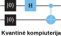

Pratarmė
Kaip skaityti šią knygą
Padėka
Apie autorius
Prisidėti prie knygos
Licencija
1
Kvantinės kompiuterijos apžvalga
1.1
Įvadas
1.2
Kvantinės kompiuterijos pradmenys
1.3
Tiuringo mašina
1.4
Skaičiavimų ištekliai
1.5
Kvantiniai bitai
1.6
Kvantinės informacijos apdorojimas
1.7
Skaičiavimo procesas
1.8
Kvantinių kompiuterių charakteristikų palyginimas
1.9
Dekoherencijos trukmė ir loginių vartų tikslumas
2
Matematinių įrankių rinkinys
2.1
Tiesinė algebra
2.2
Kompleksiniai skaičiai
2.3
Vidinė vektorių sandauga
2.4
Kubito reprezentacija Blocho sferoje
2.5
Tiesiniai operatoriai ir matricos
2.6
Unitariniai ir ermitiniai operatoriai
2.7
Diadinė operatorių dekompozicija
2.8
Matricos pėdsakas
2.9
Tenzorinė vektorių sandauga
2.10
Tenzorinė operatorių sandauga
2.11
Operatorių funkcijos
3
Kvantinės mechanikos pagrindai
3.1
Kvantinės mechanikos postulatai
3.2
Kvantinis supynimas
3.3
Tankio operatorius
3.4
EPR paradoksas
4
Kvantiniai loginiai vartai ir grandinės
4.1
Vieno kubito loginiai vartai
4.2
Kvantinių grandinių lygybės ir atvirkštiniai loginiai vartai
4.3
Kubitų būsenų matavimas
4.4
Dviejų kubitų loginiai vartai
CNOT
4.5
Tofoli loginiai vartai
4.6
SWAP ir Fredkin loginiai vartai
4.7
Bendro tipo sąlyginiai loginiai vartai
\(\boldsymbol{cU}\)
4.8
Bendro tipo būsenų matavimai
4.9
Universalių loginių vartų rinkinys
5
Kvantinė informacija ir ryšiai
5.1
Kvantinės informacijos kopijavimas
5.2
Kvantinė teleportacija
5.3
Kvantinio supynimo sukeitimas
5.4
Kvantinė kriptografija
5.4.1
BB84 kvantinis rakto pasidalijimo protokolas
5.4.2
EPR kvantinis rakto pasidalijimo protokolas
5.5
Lokalios operacijos ir klasikiniai ryšiai
5.6
Belo nelygybės testas
6
Skaičiavimai kvantiniu kompiuteriu
6.1
Bazinių vektorių numeracija
6.2
Funkcinis skaičiavimas
6.3
Kvantinis paralelizmas
6.4
Duomenų kodavimo būdai
6.5
Doičo algoritmas
6.6
Kvantinė paieška ir Groverio algoritmas
6.6.1
Algebrinė interpretacija
6.6.2
Geometrinė interpretacija
6.6.3
Groverio paieška su
\(N = 8\)
6.7
Hadamardo ir SWAP testai
6.7.1
Hadamardo testas
6.7.2
Modifikuotas Hadamardo testas
6.7.3
SWAP testas
7
Furjė transformacija ir jos taikymai
7.1
Kvantinė Furjė transformacija
7.2
Furjė transformacijos realizavimas kvantinėje grandinėje
7.3
Funkcijos periodiškumo paieška
7.4
Kvantinis fazės nustatymo algoritmas
7.5
Tiesinių lygčių sprendimas HHL algoritmu
8
Kvantinių sistemų modeliavimas ir mašininis mokymasis
8.1
Dinaminių sistemų modeliavimas
8.1.1
Aizingo modelis
8.1.2
Troterizacija
8.1.3
Aizingo modelio realizavimas kvantinėje grandinėje
8.2
Erdvinės Šriodingerio lygties sprendimo algoritmas
8.2.1
Banginė funkcija
8.2.2
Diskretizavimas
8.2.3
Perteikimas kvantinėje grandinėje
8.3
Mašininis mokymasis
8.3.1
Klasikinis mašininis mokymasis
8.3.2
Kvantinis mašininis mokymasis
8.3.3
Kvantinėmis grandinėmis paremtas klasifikatorius
8.3.4
Pagrindinių komponentų analizė
9
Kvantinių klaidų aptikimas ir taisymas
9.1
Klasikinės ir kvantinės klaidos
9.2
Kvantinis supynimas su aplinka ir klaidų atsiradimas
9.3
Bito apvertimo klaidos aptikimas ir taisymas
9.4
Fazės apvertimo klaidos aptikimas ir taisymas
9.5
Tolydžiosios klaidos
9.6
Bendrieji klaidų taisymo principai
9.7
Kvantinė Hamingo riba
9.8
Šoro 9 kubitų kodas
9.9
Kodų stabilizatoriai
9.10
Klaidoms atsparus skaičiavimas
9.11
Kvantinis tūris
Priedai
A
Debesyje pasiekiami kvantiniai kompiuteriai ir simuliatoriai
Literatūra
Knygos
Moksliniai straipsniai
Published with bookdown
Kvantinė kompiuterija
A
Debesyje pasiekiami kvantiniai kompiuteriai ir simuliatoriai
https://quantum-computing.ibm.com
https://ionq.com
https://www.xanadu.ai
https://www.rigetti.com
https://aws.amazon.com/braket/quantum-computers
https://azure.microsoft.com/en-us/products/quantum
https://quantumai.google
https://qiskit.org
https://pennylane.ai/